<div class="navbar">
  <a href="/" class="logo">Angulik</a>

  <nav
    [ngClass]="{
      'container-navbar-links-open': menuInMobile,
      'container-navbar-links': !menuInMobile
    }"
  >
    <a
      class="navbar-link"
      *ngFor="let link of navbarLinks"
      [routerLink]="link.href"
      [routerLinkActiveOptions]="{ exact: true }"
      routerLinkActive="active"
      (click)="menuInMobileToggle(false)"
    >
      {{ link.text }}
    </a>
  </nav>
  
</div>
